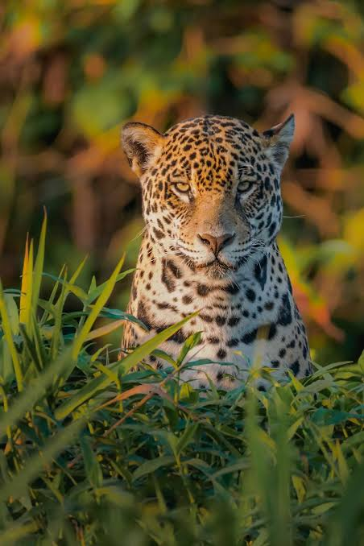

Mamífero TerrestreOnça-Pintada
Panthera onca(Panthera onca) é o maior felino das Américas e um dos principais predadores do Domínio Amazônico. Possui um corpo forte e musculoso, patas robustas e uma pelagem amarelada com manchas pretas em formato de rosetas. Existem também indivíduos de pelagem muito escura, conhecidos popularmente como onças-pretas. Comportamento onça: geralmente vive sozinha e costuma ser mais ativa durante o amanhecer, o entardecer e a noite. É uma excelente nadadora e consegue atravessar rios em busca de alimento.
Habitat: Florestas e áreas alagadas
Alimentação: Carnívora (come capivaras,veados e jacarés)